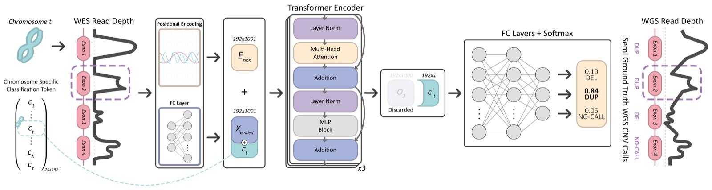

B Mandiracioglu, F Ozden, Gün Kaynar, MA Yilmaz, C Alkan, AE Cicek
Nature Communications 15 (1), 2024
Copy number variants (CNV) are shown to contribute to the etiology of several genetic disorders. Accurate detection of CNVs on whole exome sequencing (WES) data has been a long sought-after goal for use in clinics. This was not possible despite recent improvements in performance because algorithms mostly suffer from low precision and even lower recall on expert-curated gold standard call sets. Here, we present a deep learning-based somatic and germline CNV caller for WES data, named ECOLE. Based on a variant of the transformer architecture, the model learns to call CNVs per exon, using high-confidence calls made on matched WGS samples. We further train and fine-tune the model with a small set of expert calls via transfer learning. We show that ECOLE achieves high performance on human expert labelled data for the first time with 68.7% precision and 49.6% recall. This corresponds to precision and recall improvements of 18.7% and 30.8% over the next best-performing methods, respectively. We also show that the same fine-tuning strategy using tumor samples enables ECOLE to detect RT-qPCR-validated variations in bladder cancer samples without the need for a control sample.
